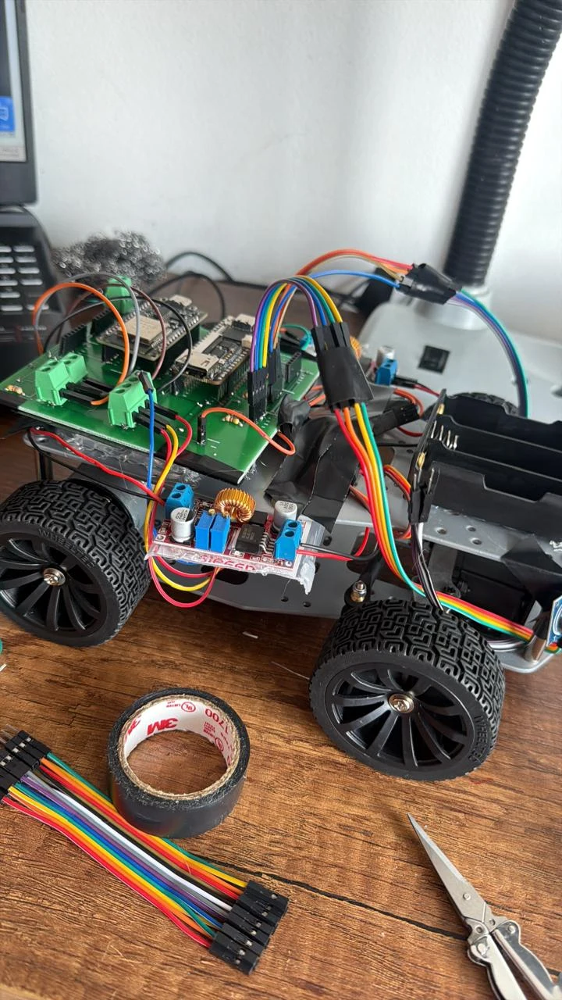
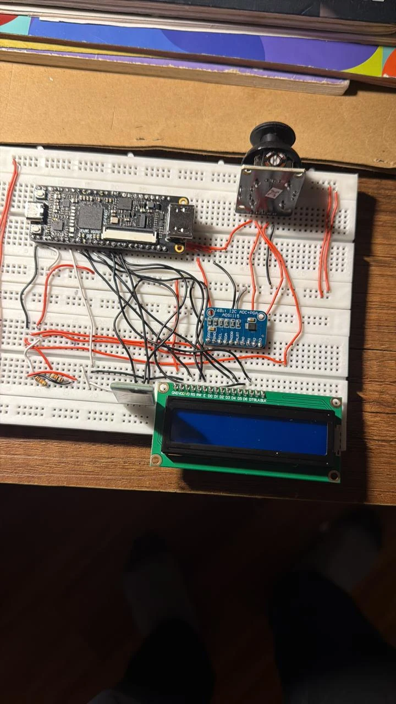
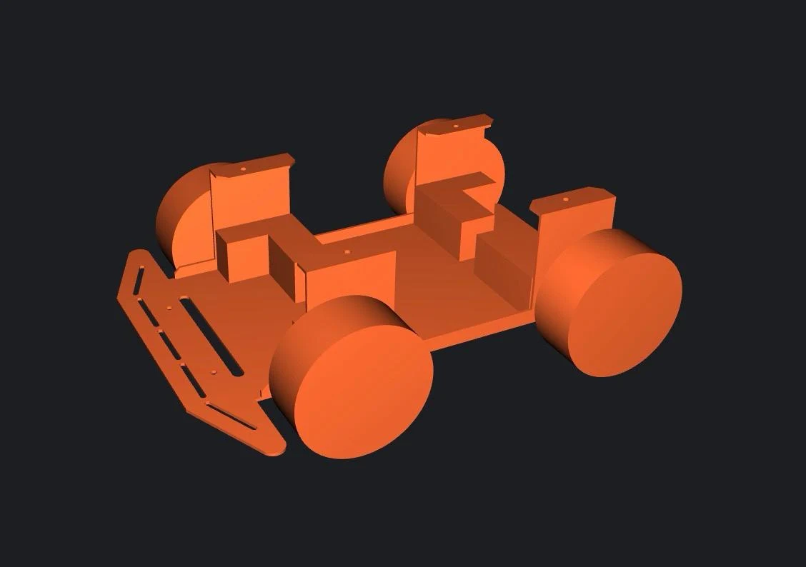
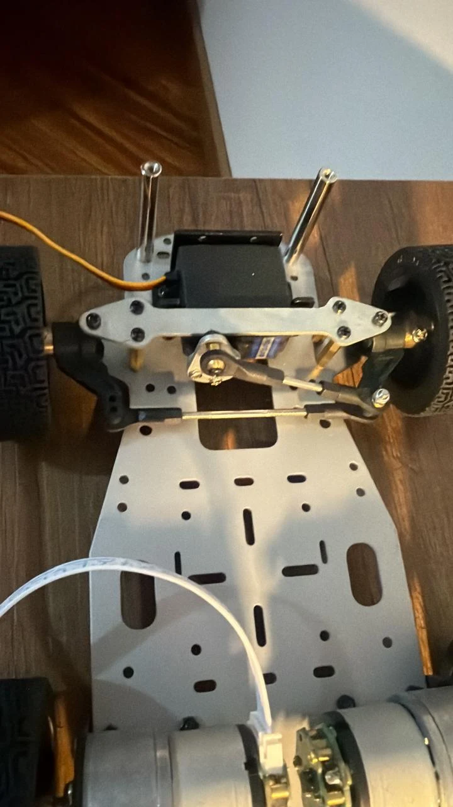
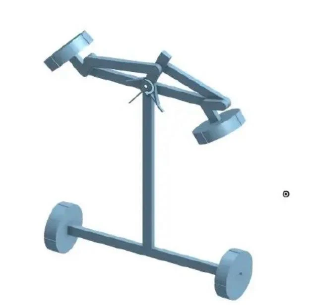
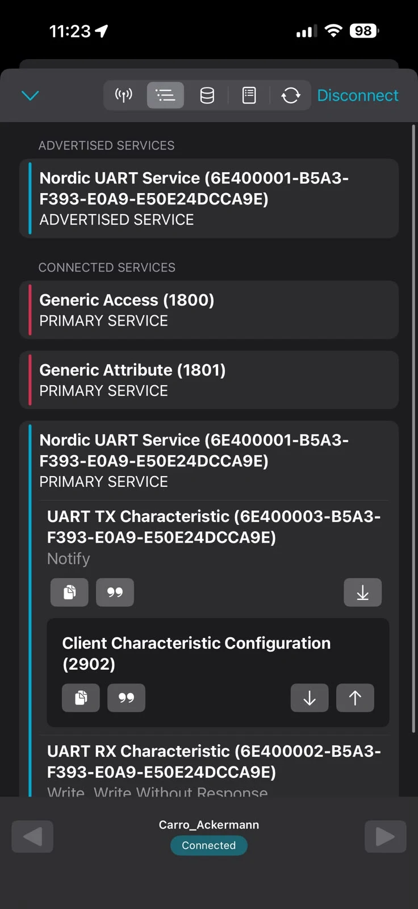
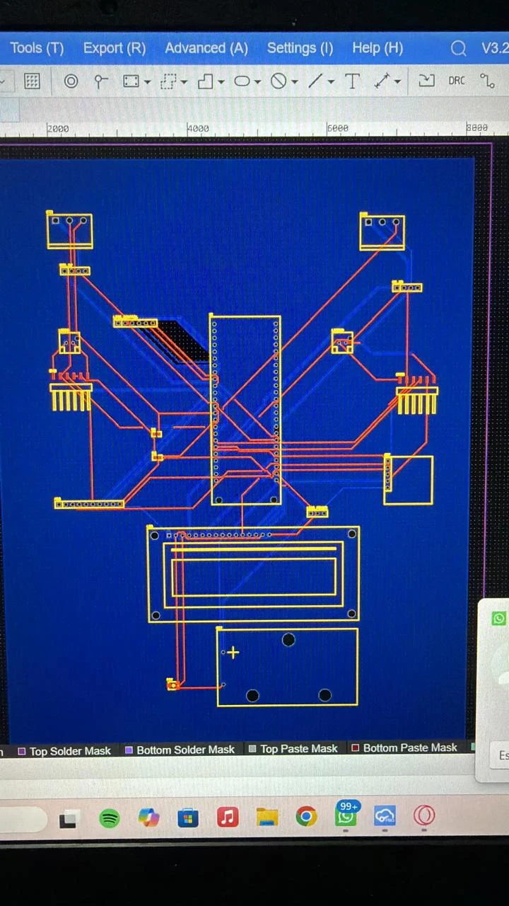
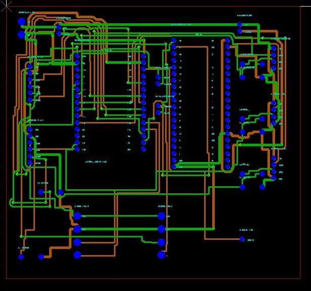
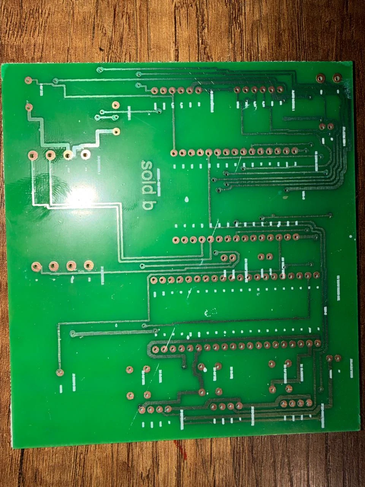

Exploración en protoboard
Realicé montajes iniciales con la Tang, periféricos y cableado de prueba. Luego verifiqué por separado la tracción, los encoders, el servo y los tres sensores con ESP32.
CARRO AUTÓNOMO CON DIRECCIÓN ACKERMANN
Un carro autónomo con dirección Ackermann y percepción ultrasónica, con Bluetooth para activar modos de operación y realizar pruebas. Así integré la mecánica, la electrónica y el software.

Una plataforma.
Varios sistemas trabajando juntos.
PROCESO DE DESARROLLO
El trabajo avanzó desde las conexiones de laboratorio hasta una placa de interconexión instalada sobre el vehículo. Las pruebas por subsistemas permitieron ajustar polaridades, señales y dirección antes de reunir el conjunto.
Realicé montajes iniciales con la Tang, periféricos y cableado de prueba. Luego verifiqué por separado la tracción, los encoders, el servo y los tres sensores con ESP32.
Estudié la ubicación del servo, el varillaje de dirección, los motores y la plataforma para los componentes. Busqué conservar el recorrido de la dirección y dejar acceso a los conectores.
Trasladé el mapa de pines probado a la PCB. Distribuí las alimentaciones, divisores de ECHO, habilitaciones de BTS y enlaces UART, con rutas en ambas caras.
Soldé los conectores y puentes entre caras, comprobé las conexiones y cargué el firmware. El control BLE desde iPhone permitió probar movimiento, sensores y dirección.

DISEÑO MECÁNICO
La base de aluminio sirve como estructura para el tren motriz y los circuitos. El sistema frontal transforma el giro del servo en movimiento de las dos ruedas mediante brazos y tirantes.


Dimensiones y masa son estimaciones de referencia para describir la escala del montaje. No corresponden a un levantamiento dimensional ni a un pesaje del vehículo terminado.
Al tomar una curva, la rueda interior recorre un radio menor y necesita girar más que la exterior. El varillaje aproxima esa relación y reduce el arrastre lateral. El servo orienta las ruedas; los motores DC producen la tracción.
GEOMETRÍA ILUSTRATIVA
Desplaza el control para explorar la diferencia entre rueda interior y exterior. El dibujo utiliza una geometría didáctica y no es una calibración del vehículo.

ARQUITECTURA ELECTRÓNICA
Los circuitos comparten una referencia GND. La corriente de los motores circula por los BTS y su cableado de potencia; las pistas de control transportan las señales y las alimentaciones de los módulos.
El firmware de la etapa final reúne la recepción BLE, la lectura de sensores y encoders y las salidas de dirección y tracción en el ESP32. Esta variante permite trabajar sin depender de respuestas de la FPGA.
La última configuración conservada selecciona el motor 2, con inversión de sentido por software. El código mantiene los canales de ambos motores y permite seleccionarlos explícitamente.
Diseñé y programé un enlace serie entre el ESP32 y la Tang Nano 20K. El ESP32 recibe órdenes BLE y adquiere datos; la lógica de la FPGA procesa las decisiones y devuelve el estado. Es una etapa de desarrollo diferenciada de la variante final con ESP32 solamente.
| Origen | Destino | Enlace |
|---|---|---|
| ESP32 GPIO17 · TX | Tang FPGA73 · RX | JP3: unir 1–2 |
| Tang FPGA74 · TX | ESP32 GPIO16 · RX | JP4: unir 1–2 |
| GND | GND común | Referencia de señales |
UART de 115200 bit/s, 8N1 y lógica de 3,3 V. Las tramas incluyen secuencia y CRC-8; los tiempos de vigilancia permiten detener la tracción si se pierde el enlace. En Gowin seleccioné GW2AR-18C, QN88, con reloj de referencia de 27 MHz y programación de la memoria Flash externa para conservar el programa al apagar.
Placa y dispositivo: documentación de Sipeed. El protocolo corresponde a los archivos del proyecto.
Positivo a B+ de ambos BTS y entradas de los reguladores. Negativo a B− y retorno común. Registré aproximadamente 11,79–11,84 V en pruebas iniciales.
Alimenta las entradas de 5 V de las placas y los tres sensores. JP1 y JP2 enlazan la línea del sistema con ESP32 y Tang, respectivamente.
Alimentación directa al servo desde el segundo XL4015. El retorno se une al GND común. La señal de dirección llega por GPIO13.
La base metálica exige aislamiento bajo la PCB y las conexiones. La continuidad de GND se comprueba con el sistema apagado; no basta con observar que enciendan los LED.
| Subsistema | Señal | GPIO del ESP32 |
|---|---|---|
| BTS motor 1 | RPWM / LPWM / EN | 25 / 26 / 14 |
| BTS motor 2 | RPWM / LPWM / EN | 32 / 33 / 23 |
| Encoder 1 | A / B | 34 / 35 |
| Encoder 2 | A / B | 39 (VN) / 36 (VP) |
| Sensor frontal | TRIG / ECHO | 18 / 19 |
| Sensor izquierdo | TRIG / ECHO | 21 / 22 |
| Sensor derecho | TRIG / ECHO | 5 / 4 |
| Servo | Señal | 13 |
| UART Tang | TX / RX | 17 / 16 |
CONTROL DESDE IPHONE
Conecté el iPhone al ESP32 mediante Bluetooth Low Energy con nRF Connect. La aplicación descubre el dispositivo Carro_Ackermann y permite escribir comandos y recibir notificaciones del firmware.
Activar Bluetooth, abrir nRF Connect y escanear. Seleccionar Carro_Ackermann y pulsar Connect dentro de la aplicación.
En la lista de servicios, localizar el servicio 6E400001… No es necesario crear una app propia para estas pruebas.
En UART TX Characteristic, UUID 6E400003…, activar Notify con el control de notificaciones. Allí aparece la información enviada por el carro.
En UART RX Characteristic, UUID 6E400002…, pulsar escritura, seleccionar UTF-8, introducir la orden completa y pulsar Write. El descriptor 2902 configura notificaciones; los comandos se escriben en RX.

COMANDOS DEL FIRMWARE
Selecciona una orden para copiarla. Es texto UTF-8, no un valor hexadecimal.
El vehículo arranca detenido. STOP deshabilita la tracción y la desconexión BLE también provoca una parada. En automático se comprueba la respuesta de los sensores y se vigila el cambio de los encoders.
Herramienta utilizada: nRF Connect para iOS, Nordic Semiconductor.
Servicio 6E400001-B5A3-F393-E0A9-E50E24DCCA9E
RX · escritura 6E400002-B5A3-F393-E0A9-E50E24DCCA9E
TX · notificaciones 6E400003-B5A3-F393-E0A9-E50E24DCCA9E
LECTURAS Y MONITOREO
El monitor serie de VS Code y las notificaciones UART TX de nRF Connect permiten observar el estado del carro. Los encoders muestran cuentas acumuladas y los sensores muestran distancias en centímetros.
Conteo positivo registrado
E1:37159Conteo negativo registrado
E1:-36310Reconstrucción visual con los conteos de la prueba inicial. El prefijo E1 corresponde al formato del firmware BLE; no es una captura original de esa notificación.
Ejemplo del formato que muestra la app
F:18 L:80 R:95Sirve para interpretar la pantalla: en este ejemplo, 18 cm por el frente activa la parada. No quedó archivada una serie numérica de distancias reales del ensayo.
| Dato de la prueba | Valor disponible | Qué significa |
|---|---|---|
| Encoder 1 · sentido positivo | +37159 cuentas | Eventos acumulados del encoder en esa prueba. |
| Encoder 1 · sentido negativo | −36310 cuentas | El signo cambia con el sentido de giro. |
| Encoder 2 | Conteo confirmado, sin cifra archivada | Se consulta con ENC2; la app responde E2 seguido del contador. |
| Sensores durante el diagnóstico inicial | Reporte textual: «F 0 R 0» | Ese estado no demostraba una distancia real de 0 cm. Después se confirmó respuesta al acercar objetos. |
| Distancias de los tres sensores | Respuesta funcional confirmada | El video 2 documenta sensores y dirección; no se presenta una tabla de distancias inventada como medición. |
Al girar el motor cambian los números de E1 o E2. Una cuenta es un evento detectado, no una vuelta completa. El valor acumulado puede aumentar o disminuir según el sentido. ZERO permite reiniciar los contadores con el carro detenido.
Los números de F, L y R representan centímetros. En el firmware integrado, N significa respuesta completa sin una distancia útil; X indica falta de respuesta o dato vencido; H, ECHO atascado alto; y ?, sensor todavía no muestreado.
Los umbrales de 25, 40, 55 y 70 cm del informe son decisiones del programa. Una captura de UART TX o del monitor serie permite añadir una tabla experimental de distancias con sus valores exactos.
TRACCIÓN Y REALIMENTACIÓN
Los motores MG513 de 12 V se manejan con módulos IBT-2 basados en BTS7960. Los encoders entregan señales digitales para contar movimiento y distinguir su sentido.
Un GPIO entrega una señal de control y no la potencia que demanda un motor. El módulo puente H permite aplicar corriente al motor y cambiar su polaridad. RPWM y LPWM seleccionan el sentido; R_EN y L_EN habilitan cada canal.
Elegí un módulo por motor para controlar los dos canales de forma independiente. El cableado B+/B− recibe la alimentación de potencia y M+/M− va al motor correspondiente. Los EN incluyen resistencias de 4,7 kΩ a GND.
El BTS7960 es un medio puente de potencia; el módulo reúne dos para formar el puente H. Referencia de Infineon.
Los canales A y B cambian desfasados. La rutina cuenta flancos de A y consulta B para obtener el signo. La prueba inicial utilizó ambos cambios de A, una decodificación de tipo ×2.
La alimentación lógica de los encoders es de 3,3 V. Comprobé el sentido real de giro y corregí por software la inversión de los motores para que una orden positiva correspondiera al avance del vehículo.
// Conteos conservados de las primeras pruebas de M1 sentido_positivo +37159 cuentas sentido_negativo -36310 cuentas // Cada cuenta representa un evento del encoder. // El signo indica el sentido según la convención del software.
Transcripción de los valores registrados durante las pruebas; la consola es una presentación gráfica del informe, no una captura de VS Code. Se omiten RPM y velocidad lineal porque no se confirmó la relación de cuentas por vuelta de rueda.
| Parámetro | Valor conservado | Interpretación |
|---|---|---|
| Prueba inicial conjunta | 50 % PWM · aproximadamente 35 s | Motores y secuencia de dirección |
| Avance automático nominal | 35 % PWM | Parámetro del firmware |
| Curva automática | 30 % PWM | Parámetro del firmware |
| Marcha exploratoria permitida | 20 % PWM | Solo con condiciones de validación |
| Límite manual configurado | 50 % PWM | No representa velocidad en m/s |
El porcentaje PWM describe el ciclo útil de la señal. La velocidad real también depende de la batería, la carga, el rozamiento y el motor. En el programa, los contadores se emplean para supervisar el movimiento; no se implementó un control de velocidad PID.
PERCEPCIÓN Y DIRECCIÓN
Tres sensores HC-SR04 observan el frente y los laterales. El ESP32 los dispara por turnos para reducir interferencias y convierte la duración del eco en una distancia aproximada.
Con t en microsegundos, la fórmula entrega centímetros usando la velocidad aproximada del sonido en aire a temperatura ambiente. Cada ECHO se reduce de 5 V a unos 3,05 V mediante un divisor: 3 kΩ en serie y 4,7 kΩ a GND, antes de entrar al ESP32.
EXPLORADOR DE LA LÓGICA
SIMULACIÓN DIDÁCTICAEstos controles representan distancias hipotéticas. No muestran lecturas en vivo ni resultados medidos del vehículo.
Frente y laterales con espacio en este escenario.
Los números anteriores son umbrales de programación, no una tabla de mediciones experimentales.
El servo S20F recibe un tren de pulsos en GPIO13. El ancho del pulso determina su referencia de posición y el varillaje transmite el movimiento a las ruedas.
La versión integrada conserva una señal continua para sostener la referencia. Estos anchos de pulso se probaron como posiciones de dirección; no equivalen por sí solos a un ángulo medido de las ruedas.
DISEÑO Y FABRICACIÓN ELECTRÓNICA
La placa organiza el ESP32 y la Tang, los conectores hacia los módulos externos y el acondicionamiento de las señales. El mapa de la protoboard fue la base para definir las redes de la PCB.



Reservé posiciones para las placas, conectores de sensores y BTS, borneras de encoders y alimentación. El servo recibe desde la PCB su señal, mientras su alimentación de 6 V se mantiene en el cableado externo.
Los tres divisores ECHO se mantienen independientes. La alimentación de 5 V, la lógica de 3,3 V y el retorno GND se identifican como redes distintas. La corriente de los motores no atraviesa las pistas de señal.
Revisé las conexiones del diseño y exporté los archivos Gerber y de taladrado. Después inspeccioné la placa fabricada y verifiqué las rutas con el multímetro antes de instalar los módulos.
Los agujeros de esta placa no tienen metalización interna. Realicé las uniones entre capas con conductores soldados a ambas caras donde era necesario. Un taladro por sí solo no establece continuidad eléctrica.
| Referencia | Uso |
|---|---|
| J1 | Entrada regulada de 5 V y GND |
| J2 / J3 | Control de BTS motor 1 y motor 2 |
| J4 / J5 | Encoders: 3V3, GND, A, B |
| J6 | Señal del servo en GPIO13 |
| J7 / J8 / J9 | Sensores frontal, izquierdo y derecho |
| JP1 / JP2 | Puentes de alimentación ESP32 / Tang |
| JP3 / JP4 | Puentes UART: TX de una placa hacia RX de la otra |
En la revisión de tres taladros faltantes, las dos conexiones GND ya disponían de continuidad por rutas alternativas comprobadas. Resolví la conexión restante de 3,3 V mediante un puente de cable. La validación física complementó la revisión del diseño.
La comprobación DRC corresponde a las reglas del archivo de diseño. La soldadura, el contacto de los conectores y las uniones manuales entre caras requieren verificación en la placa fabricada.
EVIDENCIA DEL PROYECTO
Los videos aportados documentan dos pruebas complementarias: tracción coordinada con la dirección y respuesta del mecanismo Ackermann ante los sensores.
Prueba de funcionamiento de la tracción y del conjunto de dirección.
Descargar video 1Prueba de detección de obstáculos y respuesta de la dirección.
Descargar video 2Comprobé el funcionamiento del montaje final durante las pruebas del proyecto. Las pruebas reúnen control de motores, lectura de sensores, conteo de encoders y accionamiento del servo; la comunicación BLE permitió enviar órdenes desde el iPhone.
El desarrollo mostró que la integración exige comprobar tanto el programa como las conexiones físicas: referencia GND, alimentación, soldaduras entre caras, sentido de los motores y continuidad de la señal del servo.
TRAZABILIDAD
Las fotografías, los videos, el mapa de conexiones, los registros de encoders y los archivos de firmware son material del proyecto. Confirmé el funcionamiento del montaje final durante las pruebas.
Se presentan los conteos originales sin convertirlos a RPM ni a velocidad lineal. Los videos evidencian movimiento, pero no constituyen una medición de velocidad o precisión. Las imágenes CAD se utilizan como representaciones mecánicas de referencia y no como planos certificados de fabricación.